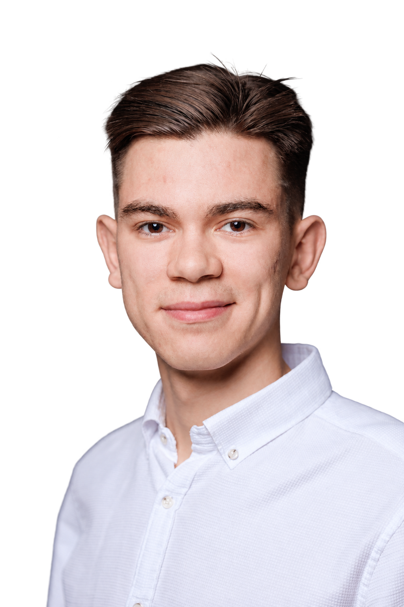
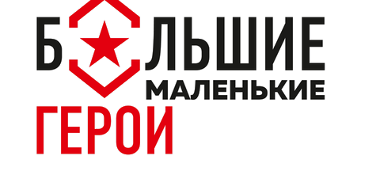

Управление командами
Более трёх лет управляю командами. Организую разработку: декомпозирую задачи, веду бэклог и планирую работу.

Технологический предприниматель
Создаю продукты с ИИ и развиваю перспективные направления бизнеса.
Соединяю продуктовую работу, управление командами и умение разбираться в технической реализации.
Рассматриваю инновационные проекты и задачи по развитию продуктов.
Более трёх лет управляю командами. Организую разработку: декомпозирую задачи, веду бэклог и планирую работу.
Использую финансовый анализ, чтобы оценивать экономику решений и обосновывать инвестиции.
Собираю прототипы и ИИ-агентов с фокусом на ценности для бизнеса. Автоматизирую процессы.
Смотрю на отрасли системно и с предпринимательской точки зрения. Фундаментальная подготовка помогает видеть возможности для новых продуктов.
MiniCEO / Co-product
С июня 2026 года
Строю внутреннюю платформу полного цикла управления клиентским опытом: выявление проблем, приоритизация, работа команды разработки, внедрение решений и оценка их эффекта.
100+продуктов в компании
Топ-10из 7000 кандидатов MiniCEO
Кофаундер, CEO
С декабря 2025 по июль 2026 года
С командой прошёл путь от MVP и первых пилотов до продаж продукта для анализа видимости бизнеса в нейросетях.
Первую техническую версию собрал самостоятельно, автоматизировал сбор ответов моделей через веб-интерфейсы и API.
7пилотных запусков, в том числе 2 платящих клиента
Полная техническая реализация
Собрал ИИ-агента для расчёта ОСАГО.
По заданным параметрам клиента агент заполняет калькуляторы страховых компаний и возвращает доступные предложения менеджеру. Менеджер может сравнить условия и предложить клиенту подходящие варианты.
Менеджер в операционном блоке
С июня по сентябрь 2025 года
Перестроил работу клиентской поддержки маркетплейса. Работал с аналитикой обращений, антифродом и операционными расходами.
Бизнес-аналитик
Реализовывал пилоты, разрабатывал пользовательские сценарии, логику платформы и архитектуру данных для проекта цифровизации агрообъекта.
Аналитик маркетплейсов
Автоматизировал операционные процессы компании с помощью готовых ИИ-решений. Прогнозировал финансовые показатели компании.
Модератор
Вёл и модерировал групповую работу предпринимателей, проводил деловые игры и разбирал сложные ситуации.
Управление инновациями в бизнесе в МФТИ и Bachelor of Business Administration в Московской школе управления «Сколково».
1 местов рейтинге потока
AI HackathonМеждународный хакатон в Ташкенте, 2025. Лидировал команду бакалавриата.
Родом из Набережных Челнов. Со школьных лет занимался олимпиадами по математике, физике и экономике, учился программированию в Академии Яндекса и запускал молодёжные проекты.
В прошлом получил первый дан по каратэ, сейчас увлекаюсь марафонами.
Мне интересны бизнес-экспедиции. Участвовал в поездке в Ташкент, а поездку в Индию организовал самостоятельно.
Мне интересны технологические продукты и задачи на пересечении бизнеса и ИИ. Если видишь точку пересечения, напиши.
Социальные и благотворительные проекты

Большие маленькие герои ONLINE ↗
Лидер образовательного проекта об историях детей, ставших героями Великой Отечественной войны. Развивал стендовую экспозицию и её онлайн-формат для разных площадок.
Конкурс грантов
МФТИ и Сколково ↗
Помогал развивать конкурс, через который сам получил возможность учиться. Участвовал в пересборке логики отбора и создал приложение с ИИ-ботами для прохождения заданий.